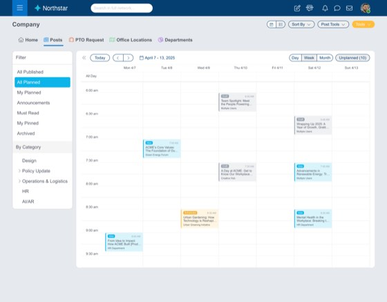
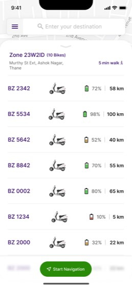
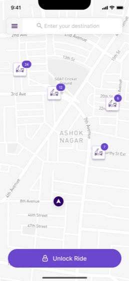
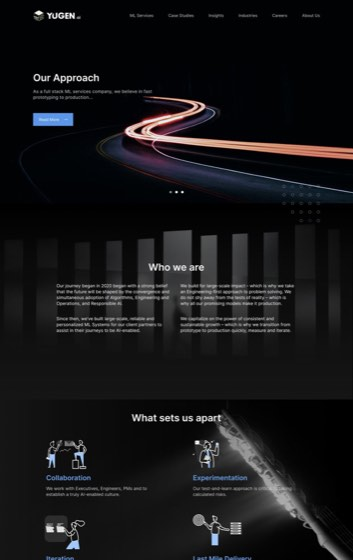
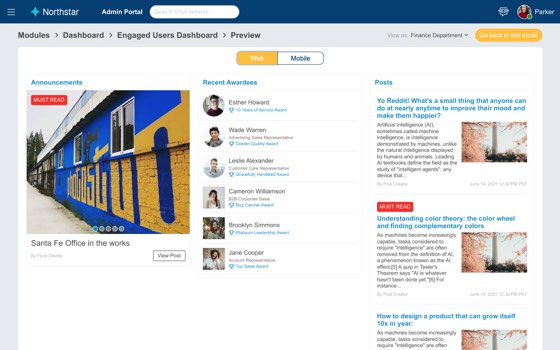
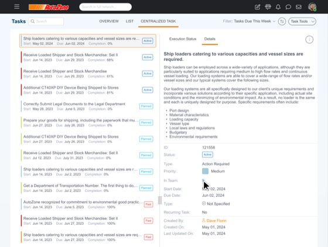
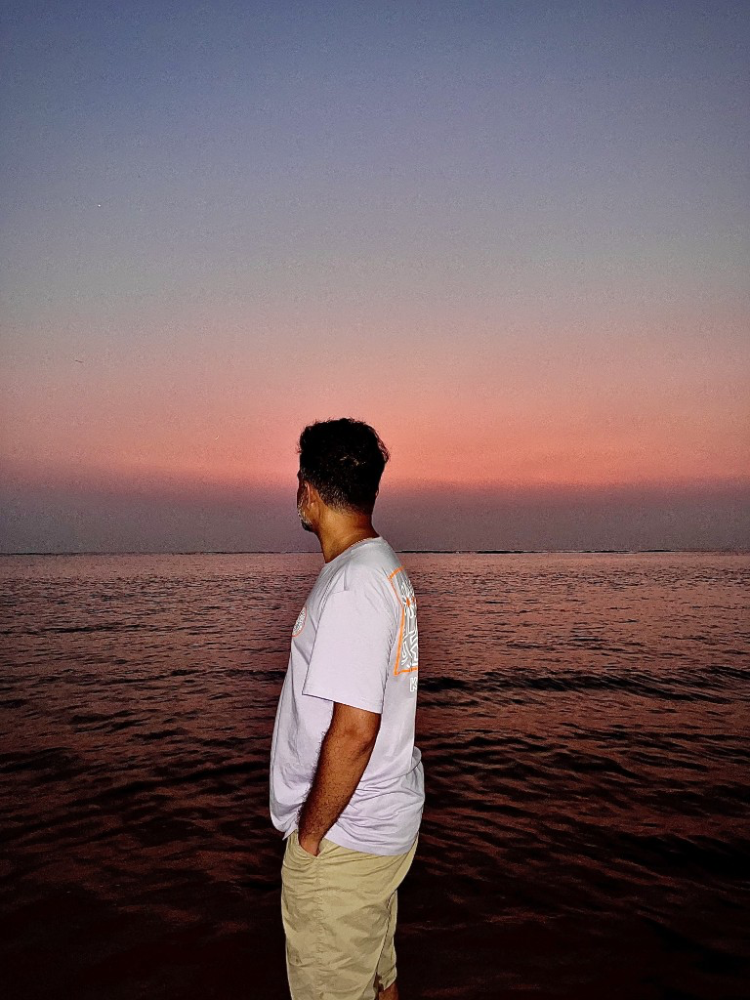

Enterprise SaaS / Content planning
Post Planning Calendar
Plan content before a draft exists.
Senior UI/UX Designer - Product Designer
I design tools that make complex work feel simple.
Based in Pune, India. Currently at MangoApps, shaping how teams plan content, share knowledge and work together.
Over 13 years in product design, with a focus on enterprise software and the small details that make it easier to use.

Plan content before a draft exists.


Show riders the price and range before they unlock a bike.

Give an AI services company an identity buyers can recognize.

Give each employee group a homepage its admins can preview.

Use one approval workflow for Posts, Pages and Wikis.

Turn tracker entries into tasks for the right store teams.
I lead end-to-end product design across web and mobile, working with product and engineering from discovery through release. Recent work includes content planning, audience-based dashboards and a shared approval workflow.
Designed internal and customer-facing experiences. Simplified multi-step tasks and established interaction standards for data-heavy enterprise interfaces.
Designed web and mobile collaboration tools. Developed reusable patterns for permissions, search and notifications, and reviewed implementation with engineering.
Designed communication keyboards and educational mobile experiences for children and people with disabilities.
Sole designer across client websites, mobile applications and brand identities, from initial flows to final artwork.
I like making things to understand them. Outside my product work, I build prototypes with Cursor, Claude and SwiftUI, and write about what I learn along the way.
My toolkit is simple: Figma for design, AI tools for prototyping, and curiosity for everything in between.

For a role, a project, or a thoughtful conversation.